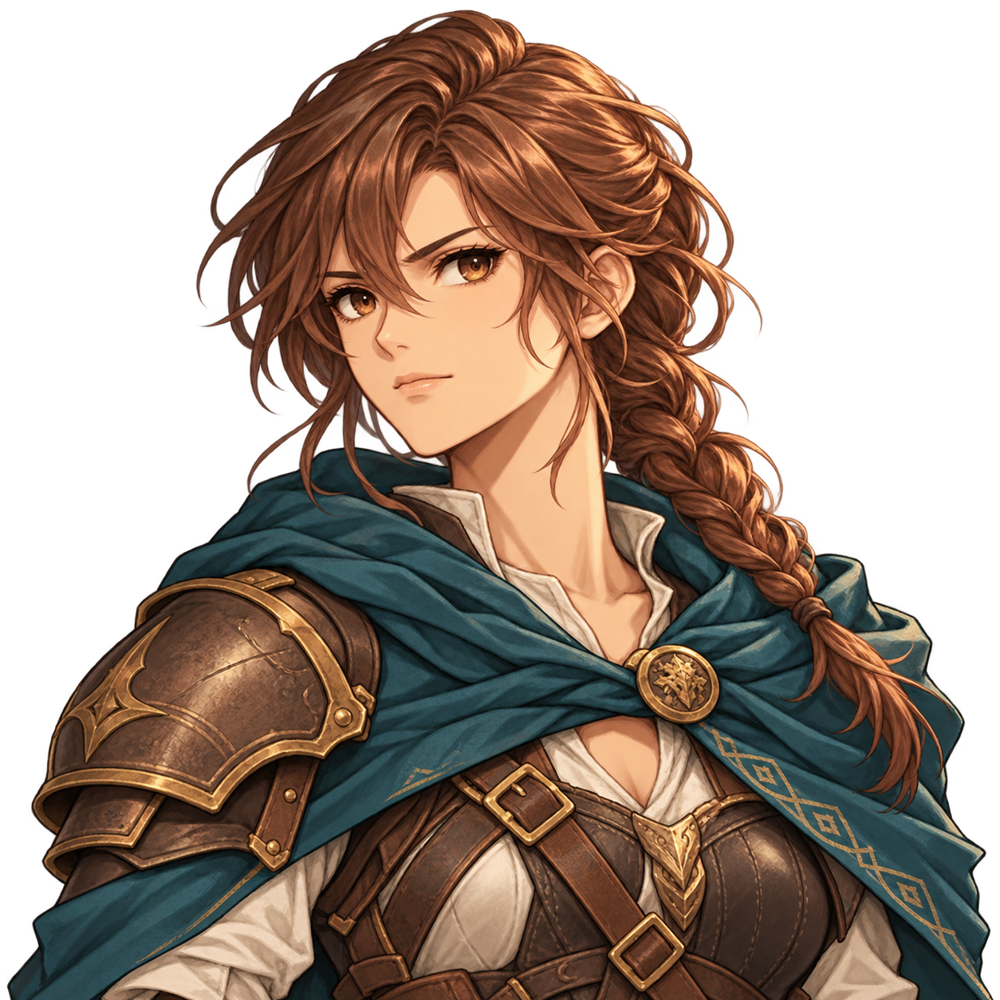
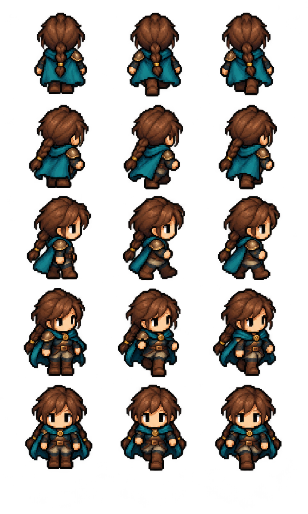
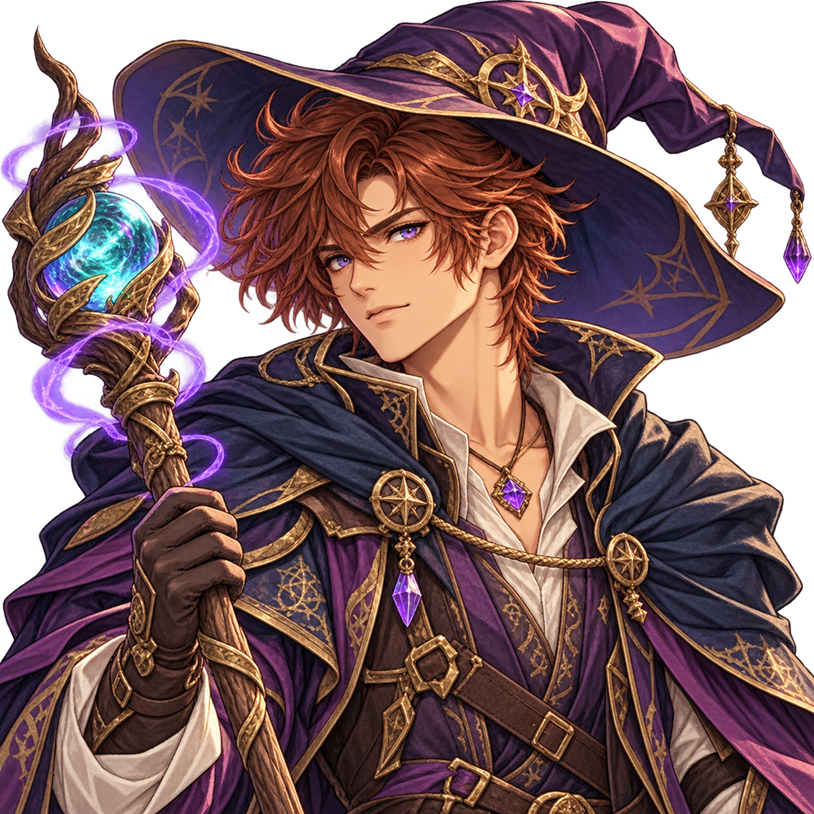
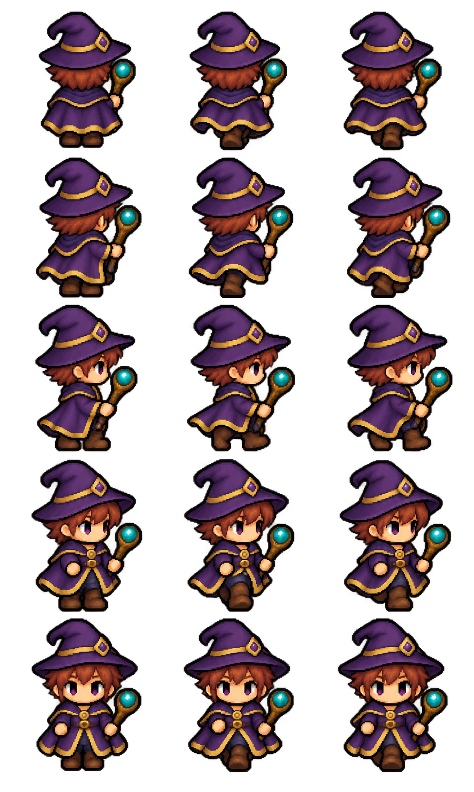
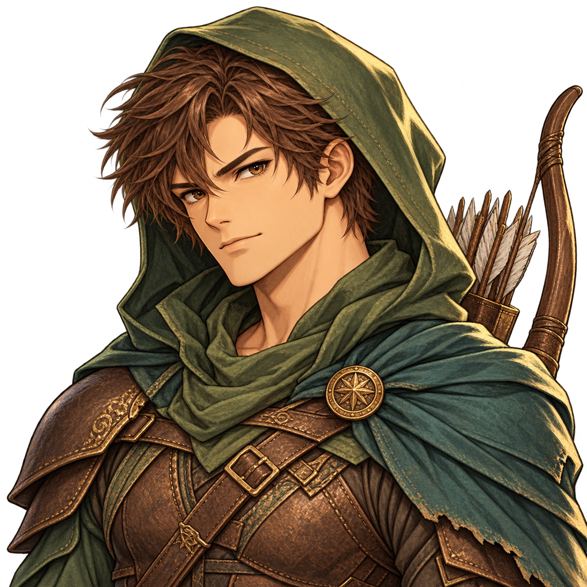
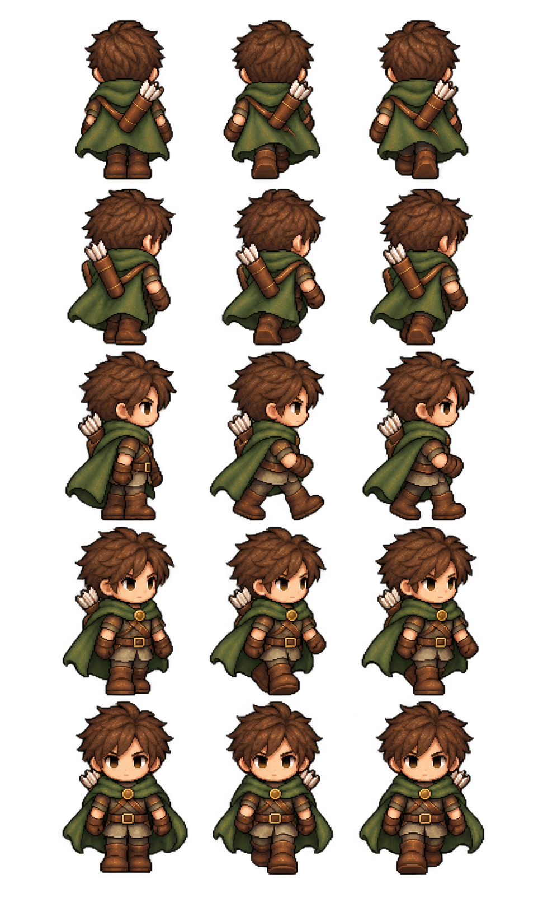

Disponible : choix du genre dans les trois cartes de classe
Variantes visuelles des héros
Une Guerrière, un Mage et un Éclaireur avec portraits et sprites de marche.
Comprendre ce que cela implique
Le menu de sélection conserve trois cartes de classe. Dans la carte choisie, les boutons Femme / Homme changent le portrait et le titre ; le serveur valide et sauvegarde le genre du héros en solo comme en multijoueur. La fiche, les sprites sur la carte et la projection astrale du Mage suivent ce choix. À la reprise, le choix sauvegardé reste verrouillé. Les anciennes sauvegardes gardent les apparences historiques. Les caractéristiques et règles de jeu sont identiques pour les deux genres.
Chaque planche présente le même personnage dans cinq directions et trois poses. Les quinze silhouettes sont des poses d’animation, sans effet sur les effectifs ou les déplacements officiels.






Dans cet article
Détails de référence
Texte de référence mis en forme et conservé dans l’historique de cet article. Les paragraphes datés peuvent décrire une évolution ou une étape antérieure.
Les trois classes proposent désormais deux genres : Guerrier ou Guerrière, Mage femme ou homme, Éclaireuse ou Éclaireur. Les nouvelles variantes possèdent chacune un portrait illustré et une planche de quinze sprites sur fond transparent, dans le style des héros existants.
Les fichiers sont conservés séparément dans app/assets/portraits/ et app/assets/heroes/, avec les identifiants warrior-female, mage-male et ranger-male et le suffixe v1. Les portraits portent le préfixe hero- et les planches le suffixe jrpg-walk.
Les planches présentent trois colonnes (immobile, pas gauche, pas droit) et cinq lignes (dos N, diagonale NE, profil E, diagonale SE, face S). Les vues ouest peuvent utiliser les miroirs des vues est comme les sprites actuels.
Statut
Disponible dans le menu de sélection du héros, en mode test comme dans le lobby. Le menu conserve trois cartes de classe. La carte sélectionnée affiche deux boutons Femme / Homme : ils changent le portrait et le titre de la classe sans ajouter de carte. Les capacités et caractéristiques restent identiques.
Le navigateur transmet ensemble la classe et le genre. Le serveur valide le choix, retire l’état prêt après modification et conserve le genre dans le héros, les instantanés et les sauvegardes. Le choix est verrouillé à la reprise d’une sauvegarde et après le lancement. Au démarrage de l’ancien parcours d’initialisation, le serveur reprend le genre confirmé dans le lobby plutôt qu’une éventuelle valeur différente dans l’instantané navigateur.
La fiche du héros, le sprite local, les héros distants identifiés et la projection astrale du Mage suivent ce choix. Le genre d’un adversaire n’est pas transmis lorsque sa classe reste inconnue. Les anciennes sauvegardes sans genre gardent les apparences historiques : Guerrier homme, Mage femme et Éclaireuse femme. Ces visuels ne modifient aucune caractéristique, règle de déplacement, récompense ou validation d’action du serveur, en GPS comme sur carte fictive.
Les rectangles des nouvelles planches sont mesurés sur leur transparence dans hero-gender-sheets.js, avec un axe central et une ligne de pieds commune. Les huit orientations et le cycle de marche existants sont conservés. L’aperçu des assets reste consultable dans output/hero-variants/index.html.
Création
Visuels générés avec l’outil intégré imagegen à partir des portraits et planches existants comme références de style et de costume. Les prompts exacts sont conservés dans output/hero-variants/prompts.json.
Direction anime — 24 octobre 2026
Les portraits des six héros utilisent désormais les fichiers hero-{classe}-{genre}-anime-v2.png. Le Mage masculin conserve le violet et l’or, avec les cheveux courts et une capuche rabattue. Sa planche mage-male-jrpg-walk-v2.png et ses rectangles dans mage-male-sheet-v2.js remplacent visuellement le chapeau pointu. Les autres sprites restent identiques. Les anciens fichiers sont conservés. Les identités et les caractéristiques des sauvegardes ne changent pas ; la présentation courante utilise les nouveaux portraits. Voir Portraits anime et personnages composés pour la bibliothèque des PNJ, les décors et les limites de personnalisation.